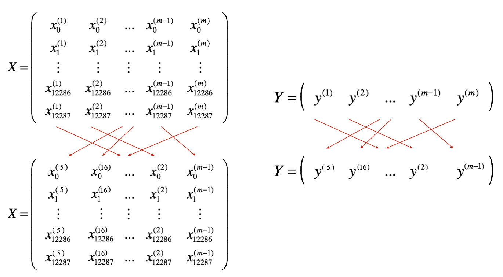

### v1.1Optimization Methods
Until now, you’ve always used Gradient Descent to update the parameters and minimize the cost. In this notebook, you’ll gain skills with some more advanced optimization methods that can speed up learning and perhaps even get you to a better final value for the cost function. Having a good optimization algorithm can be the difference between waiting days vs. just a few hours to get a good result.
By the end of this notebook, you’ll be able to:
- Apply optimization methods such as (Stochastic) Gradient Descent, Momentum, RMSProp and Adam
- Use random minibatches to accelerate convergence and improve optimization

Figure 1 : Minimizing the cost is like finding the lowest point in a hilly landscape
Notations: As usual, $ = $ da for any variable a.
Let’s get started!
Table of Contents
- 1- Packages
- 2 - Gradient Descent
- 3 - Mini-Batch Gradient Descent
- 4 - Momentum
- 5 - Adam
- 6 - Model with different Optimization algorithms
- 7 - Learning Rate Decay and Scheduling
import numpy as np
import matplotlib.pyplot as plt
import scipy.io
import math
import sklearn
import sklearn.datasets
from opt_utils_v1a import load_params_and_grads, initialize_parameters, forward_propagation, backward_propagation
from opt_utils_v1a import compute_cost, predict, predict_dec, plot_decision_boundary, load_dataset
from copy import deepcopy
from testCases import *
from public_tests import *
%matplotlib inline
plt.rcParams['figure.figsize'] = (7.0, 4.0) # set default size of plots
plt.rcParams['image.interpolation'] = 'nearest'
plt.rcParams['image.cmap'] = 'gray'
%load_ext autoreload
%autoreload 2A simple optimization method in machine learning is gradient descent (GD). When you take gradient steps with respect to all \(m\) examples on each step, it is also called Batch Gradient Descent.
### Exercise 1 - update_parameters_with_gd
Implement the gradient descent update rule. The gradient descent rule is, for \(l = 1, ..., L\): \[ W^{[l]} = W^{[l]} - \alpha \text{ } dW^{[l]} \tag{1}\] \[ b^{[l]} = b^{[l]} - \alpha \text{ } db^{[l]} \tag{2}\]
where L is the number of layers and \(\alpha\) is the learning rate. All parameters should be stored in the parameters dictionary. Note that the iterator l starts at 1 in the for loop as the first parameters are \(W^{[1]}\) and \(b^{[1]}\).
def update_parameters_with_gd(parameters, grads, learning_rate):
"""
Update parameters using one step of gradient descent
Arguments:
parameters -- python dictionary containing your parameters to be updated:
parameters['W' + str(l)] = Wl
parameters['b' + str(l)] = bl
grads -- python dictionary containing your gradients to update each parameters:
grads['dW' + str(l)] = dWl
grads['db' + str(l)] = dbl
learning_rate -- the learning rate, scalar.
Returns:
parameters -- python dictionary containing your updated parameters
"""
L = len(parameters) // 2 # number of layers in the neural networks
# Update rule for each parameter
for l in range(1, L + 1):
# (approx. 2 lines)
# parameters["W" + str(l)] =
# parameters["b" + str(l)] =
# CODE_START
# CODE_END
return parametersparameters, grads, learning_rate = update_parameters_with_gd_test_case()
learning_rate = 0.01
parameters = update_parameters_with_gd(parameters, grads, learning_rate)
print("W1 =\n" + str(parameters["W1"]))
print("b1 =\n" + str(parameters["b1"]))
print("W2 =\n" + str(parameters["W2"]))
print("b2 =\n" + str(parameters["b2"]))
update_parameters_with_gd_test(update_parameters_with_gd)A variant of this is Stochastic Gradient Descent (SGD), which is equivalent to mini-batch gradient descent, where each mini-batch has just 1 example. The update rule that you have just implemented does not change. What changes is that you would be computing gradients on just one training example at a time, rather than on the whole training set. The code examples below illustrate the difference between stochastic gradient descent and (batch) gradient descent.
- (Batch) Gradient Descent:
X = data_input
Y = labels
m = X.shape[1] # Number of training examples
parameters = initialize_parameters(layers_dims)
for i in range(0, num_iterations):
# Forward propagation
a, caches = forward_propagation(X, parameters)
# Compute cost
cost_total = compute_cost(a, Y) # Cost for m training examples
# Backward propagation
grads = backward_propagation(a, caches, parameters)
# Update parameters
parameters = update_parameters(parameters, grads)
# Compute average cost
cost_avg = cost_total / m
- Stochastic Gradient Descent:
X = data_input
Y = labels
m = X.shape[1] # Number of training examples
parameters = initialize_parameters(layers_dims)
for i in range(0, num_iterations):
cost_total = 0
for j in range(0, m):
# Forward propagation
a, caches = forward_propagation(X[:,j], parameters)
# Compute cost
cost_total += compute_cost(a, Y[:,j]) # Cost for one training example
# Backward propagation
grads = backward_propagation(a, caches, parameters)
# Update parameters
parameters = update_parameters(parameters, grads)
# Compute average cost
cost_avg = cost_total / mIn Stochastic Gradient Descent, you use only 1 training example before updating the gradients. When the training set is large, SGD can be faster. But the parameters will “oscillate” toward the minimum rather than converge smoothly. Here’s what that looks like:

“+” denotes a minimum of the cost. SGD leads to many oscillations to reach convergence, but each step is a lot faster to compute for SGD than it is for GD, as it uses only one training example (vs. the whole batch for GD).
Note also that implementing SGD requires 3 for-loops in total: 1. Over the number of iterations 2. Over the \(m\) training examples 3. Over the layers (to update all parameters, from \((W^{[1]},b^{[1]})\) to \((W^{[L]},b^{[L]})\))
In practice, you’ll often get faster results if you don’t use the entire training set, or just one training example, to perform each update. Mini-batch gradient descent uses an intermediate number of examples for each step. With mini-batch gradient descent, you loop over the mini-batches instead of looping over individual training examples.

“+” denotes a minimum of the cost. Using mini-batches in your optimization algorithm often leads to faster optimization.
## 3 - Mini-Batch Gradient Descent
Now you’ll build some mini-batches from the training set (X, Y).
There are two steps: - Shuffle: Create a shuffled version of the training set (X, Y) as shown below. Each column of X and Y represents a training example. Note that the random shuffling is done synchronously between X and Y. Such that after the shuffling the \(i^{th}\) column of X is the example corresponding to the \(i^{th}\) label in Y. The shuffling step ensures that examples will be split randomly into different mini-batches.

- Partition: Partition the shuffled (X, Y) into mini-batches of size
mini_batch_size(here 64). Note that the number of training examples is not always divisible bymini_batch_size. The last mini batch might be smaller, but you don’t need to worry about this. When the final mini-batch is smaller than the fullmini_batch_size, it will look like this:

### Exercise 2 - random_mini_batches
Implement random_mini_batches. The shuffling part has already been coded for you! To help with the partitioning step, you’ve been provided the following code that selects the indexes for the \(1^{st}\) and \(2^{nd}\) mini-batches:
first_mini_batch_X = shuffled_X[:, 0 : mini_batch_size]
second_mini_batch_X = shuffled_X[:, mini_batch_size : 2 * mini_batch_size]
...Note that the last mini-batch might end up smaller than mini_batch_size=64. Let \(\lfloor s \rfloor\) represents \(s\) rounded down to the nearest integer (this is math.floor(s) in Python). If the total number of examples is not a multiple of mini_batch_size=64 then there will be \(\left\lfloor \frac{m}{mini\_batch\_size}\right\rfloor\) mini-batches with a full 64 examples, and the number of examples in the final mini-batch will be \(\left(m-mini_\_batch_\_size \times \left\lfloor \frac{m}{mini\_batch\_size}\right\rfloor\right)\).
Hint:
\[mini\_batch\_X = shuffled\_X[:, i : j]\]
Think of a way in which you can use the for loop variable k help you increment i and j in multiples of mini_batch_size.
As an example, if you want to increment in multiples of 3, you could the following:
n = 3
for k in (0 , 5):
print(k * n)def random_mini_batches(X, Y, mini_batch_size = 64, seed = 0):
"""
Creates a list of random minibatches from (X, Y)
Arguments:
X -- input data, of shape (input size, number of examples)
Y -- true "label" vector (1 for blue dot / 0 for red dot), of shape (1, number of examples)
mini_batch_size -- size of the mini-batches, integer
Returns:
mini_batches -- list of synchronous (mini_batch_X, mini_batch_Y)
"""
np.random.seed(seed) # To make your "random" minibatches the same as ours
m = X.shape[1] # number of training examples
mini_batches = []
# Step 1: Shuffle (X, Y)
permutation = list(np.random.permutation(m))
shuffled_X = X[:, permutation]
shuffled_Y = Y[:, permutation].reshape((1, m))
inc = mini_batch_size
# Step 2 - Partition (shuffled_X, shuffled_Y).
# Cases with a complete mini batch size only i.e each of 64 examples.
num_complete_minibatches = math.floor(m / mini_batch_size) # number of mini batches of size mini_batch_size in your partitionning
for k in range(0, num_complete_minibatches):
# (approx. 2 lines)
# mini_batch_X =
# mini_batch_Y =
# CODE_START
mini_batch_X = shuffled_X[:, k*mini_batch_size : (k+1) * mini_batch_size]
mini_batch_Y = shuffled_Y[:, k*mini_batch_size : (k+1) * mini_batch_size]
# CODE_END
mini_batch = (mini_batch_X, mini_batch_Y)
mini_batches.append(mini_batch)
# For handling the end case (last mini-batch < mini_batch_size i.e less than 64)
if m % mini_batch_size != 0:
#(approx. 2 lines)
# mini_batch_X =
# mini_batch_Y =
# CODE_START
mini_batch_X = shuffled_X[:, num_complete_minibatches*mini_batch_size : m]
mini_batch_Y = shuffled_Y[:, num_complete_minibatches*mini_batch_size : m]
# CODE_END
mini_batch = (mini_batch_X, mini_batch_Y)
mini_batches.append(mini_batch)
return mini_batchesnp.random.seed(1)
mini_batch_size = 64
nx = 12288
m = 148
X = np.array([x for x in range(nx * m)]).reshape((m, nx)).T
Y = np.random.randn(1, m) < 0.5
mini_batches = random_mini_batches(X, Y, mini_batch_size)
n_batches = len(mini_batches)
assert n_batches == math.ceil(m / mini_batch_size), f"Wrong number of mini batches. {n_batches} != {math.ceil(m / mini_batch_size)}"
for k in range(n_batches - 1):
assert mini_batches[k][0].shape == (nx, mini_batch_size), f"Wrong shape in {k} mini batch for X"
assert mini_batches[k][1].shape == (1, mini_batch_size), f"Wrong shape in {k} mini batch for Y"
assert np.sum(np.sum(mini_batches[k][0] - mini_batches[k][0][0], axis=0)) == ((nx * (nx - 1) / 2 ) * mini_batch_size), "Wrong values. It happens if the order of X rows(features) changes"
if ( m % mini_batch_size > 0):
assert mini_batches[n_batches - 1][0].shape == (nx, m % mini_batch_size), f"Wrong shape in the last minibatch. {mini_batches[n_batches - 1][0].shape} != {(nx, m % mini_batch_size)}"
assert np.allclose(mini_batches[0][0][0][0:3], [294912, 86016, 454656]), "Wrong values. Check the indexes used to form the mini batches"
assert np.allclose(mini_batches[-1][0][-1][0:3], [1425407, 1769471, 897023]), "Wrong values. Check the indexes used to form the mini batches"
print("\033[92mAll tests passed!")All tests passed!pip show numpyName: numpy
Version: 1.26.4
Summary: Fundamental package for array computing in Python
Home-page: https://numpy.org
Author: Travis E. Oliphant et al.
Author-email:
License: Copyright (c) 2005-2023, NumPy Developers.
All rights reserved.
Redistribution and use in source and binary forms, with or without
modification, are permitted provided that the following conditions are
met:
* Redistributions of source code must retain the above copyright
notice, this list of conditions and the following disclaimer.
* Redistributions in binary form must reproduce the above
copyright notice, this list of conditions and the following
disclaimer in the documentation and/or other materials provided
with the distribution.
* Neither the name of the NumPy Developers nor the names of any
contributors may be used to endorse or promote products derived
from this software without specific prior written permission.
THIS SOFTWARE IS PROVIDED BY THE COPYRIGHT HOLDERS AND CONTRIBUTORS
"AS IS" AND ANY EXPRESS OR IMPLIED WARRANTIES, INCLUDING, BUT NOT
LIMITED TO, THE IMPLIED WARRANTIES OF MERCHANTABILITY AND FITNESS FOR
A PARTICULAR PURPOSE ARE DISCLAIMED. IN NO EVENT SHALL THE COPYRIGHT
OWNER OR CONTRIBUTORS BE LIABLE FOR ANY DIRECT, INDIRECT, INCIDENTAL,
SPECIAL, EXEMPLARY, OR CONSEQUENTIAL DAMAGES (INCLUDING, BUT NOT
LIMITED TO, PROCUREMENT OF SUBSTITUTE GOODS OR SERVICES; LOSS OF USE,
DATA, OR PROFITS; OR BUSINESS INTERRUPTION) HOWEVER CAUSED AND ON ANY
THEORY OF LIABILITY, WHETHER IN CONTRACT, STRICT LIABILITY, OR TORT
(INCLUDING NEGLIGENCE OR OTHERWISE) ARISING IN ANY WAY OUT OF THE USE
OF THIS SOFTWARE, EVEN IF ADVISED OF THE POSSIBILITY OF SUCH DAMAGE.
----
The NumPy repository and source distributions bundle several libraries that are
compatibly licensed. We list these here.
Name: lapack-lite
Files: numpy/linalg/lapack_lite/*
License: BSD-3-Clause
For details, see numpy/linalg/lapack_lite/LICENSE.txt
Name: tempita
Files: tools/npy_tempita/*
License: MIT
For details, see tools/npy_tempita/license.txt
Name: dragon4
Files: numpy/core/src/multiarray/dragon4.c
License: MIT
For license text, see numpy/core/src/multiarray/dragon4.c
Name: libdivide
Files: numpy/core/include/numpy/libdivide/*
License: Zlib
For license text, see numpy/core/include/numpy/libdivide/LICENSE.txt
Note that the following files are vendored in the repository and sdist but not
installed in built numpy packages:
Name: Meson
Files: vendored-meson/meson/*
License: Apache 2.0
For license text, see vendored-meson/meson/COPYING
Name: spin
Files: .spin/cmds.py
License: BSD-3
For license text, see .spin/LICENSE
----
This binary distribution of NumPy also bundles the following software:
Name: OpenBLAS
Files: numpy/.dylibs/libopenblas*.so
Description: bundled as a dynamically linked library
Availability: https://github.com/OpenMathLib/OpenBLAS/
License: BSD-3-Clause
Copyright (c) 2011-2014, The OpenBLAS Project
All rights reserved.
Redistribution and use in source and binary forms, with or without
modification, are permitted provided that the following conditions are
met:
1. Redistributions of source code must retain the above copyright
notice, this list of conditions and the following disclaimer.
2. Redistributions in binary form must reproduce the above copyright
notice, this list of conditions and the following disclaimer in
the documentation and/or other materials provided with the
distribution.
3. Neither the name of the OpenBLAS project nor the names of
its contributors may be used to endorse or promote products
derived from this software without specific prior written
permission.
THIS SOFTWARE IS PROVIDED BY THE COPYRIGHT HOLDERS AND CONTRIBUTORS "AS IS"
AND ANY EXPRESS OR IMPLIED WARRANTIES, INCLUDING, BUT NOT LIMITED TO, THE
IMPLIED WARRANTIES OF MERCHANTABILITY AND FITNESS FOR A PARTICULAR PURPOSE
ARE DISCLAIMED. IN NO EVENT SHALL THE COPYRIGHT OWNER OR CONTRIBUTORS BE
LIABLE FOR ANY DIRECT, INDIRECT, INCIDENTAL, SPECIAL, EXEMPLARY, OR CONSEQUENTIAL
DAMAGES (INCLUDING, BUT NOT LIMITED TO, PROCUREMENT OF SUBSTITUTE GOODS OR
SERVICES; LOSS OF USE, DATA, OR PROFITS; OR BUSINESS INTERRUPTION) HOWEVER
CAUSED AND ON ANY THEORY OF LIABILITY, WHETHER IN CONTRACT, STRICT LIABILITY,
OR TORT (INCLUDING NEGLIGENCE OR OTHERWISE) ARISING IN ANY WAY OUT OF THE
USE OF THIS SOFTWARE, EVEN IF ADVISED OF THE POSSIBILITY OF SUCH DAMAGE.
Name: LAPACK
Files: numpy/.dylibs/libopenblas*.so
Description: bundled in OpenBLAS
Availability: https://github.com/OpenMathLib/OpenBLAS/
License: BSD-3-Clause-Attribution
Copyright (c) 1992-2013 The University of Tennessee and The University
of Tennessee Research Foundation. All rights
reserved.
Copyright (c) 2000-2013 The University of California Berkeley. All
rights reserved.
Copyright (c) 2006-2013 The University of Colorado Denver. All rights
reserved.
$COPYRIGHT$
Additional copyrights may follow
$HEADER$
Redistribution and use in source and binary forms, with or without
modification, are permitted provided that the following conditions are
met:
- Redistributions of source code must retain the above copyright
notice, this list of conditions and the following disclaimer.
- Redistributions in binary form must reproduce the above copyright
notice, this list of conditions and the following disclaimer listed
in this license in the documentation and/or other materials
provided with the distribution.
- Neither the name of the copyright holders nor the names of its
contributors may be used to endorse or promote products derived from
this software without specific prior written permission.
The copyright holders provide no reassurances that the source code
provided does not infringe any patent, copyright, or any other
intellectual property rights of third parties. The copyright holders
disclaim any liability to any recipient for claims brought against
recipient by any third party for infringement of that parties
intellectual property rights.
THIS SOFTWARE IS PROVIDED BY THE COPYRIGHT HOLDERS AND CONTRIBUTORS
"AS IS" AND ANY EXPRESS OR IMPLIED WARRANTIES, INCLUDING, BUT NOT
LIMITED TO, THE IMPLIED WARRANTIES OF MERCHANTABILITY AND FITNESS FOR
A PARTICULAR PURPOSE ARE DISCLAIMED. IN NO EVENT SHALL THE COPYRIGHT
OWNER OR CONTRIBUTORS BE LIABLE FOR ANY DIRECT, INDIRECT, INCIDENTAL,
SPECIAL, EXEMPLARY, OR CONSEQUENTIAL DAMAGES (INCLUDING, BUT NOT
LIMITED TO, PROCUREMENT OF SUBSTITUTE GOODS OR SERVICES; LOSS OF USE,
DATA, OR PROFITS; OR BUSINESS INTERRUPTION) HOWEVER CAUSED AND ON ANY
THEORY OF LIABILITY, WHETHER IN CONTRACT, STRICT LIABILITY, OR TORT
(INCLUDING NEGLIGENCE OR OTHERWISE) ARISING IN ANY WAY OUT OF THE USE
OF THIS SOFTWARE, EVEN IF ADVISED OF THE POSSIBILITY OF SUCH DAMAGE.
Name: GCC runtime library
Files: numpy/.dylibs/libgfortran*, numpy/.dylibs/libgcc*
Description: dynamically linked to files compiled with gcc
Availability: https://gcc.gnu.org/git/?p=gcc.git;a=tree;f=libgfortran
License: GPL-3.0-with-GCC-exception
Copyright (C) 2002-2017 Free Software Foundation, Inc.
Libgfortran is free software; you can redistribute it and/or modify
it under the terms of the GNU General Public License as published by
the Free Software Foundation; either version 3, or (at your option)
any later version.
Libgfortran is distributed in the hope that it will be useful,
but WITHOUT ANY WARRANTY; without even the implied warranty of
MERCHANTABILITY or FITNESS FOR A PARTICULAR PURPOSE. See the
GNU General Public License for more details.
Under Section 7 of GPL version 3, you are granted additional
permissions described in the GCC Runtime Library Exception, version
3.1, as published by the Free Software Foundation.
You should have received a copy of the GNU General Public License and
a copy of the GCC Runtime Library Exception along with this program;
see the files COPYING3 and COPYING.RUNTIME respectively. If not, see
<http://www.gnu.org/licenses/>.
----
Full text of license texts referred to above follows (that they are
listed below does not necessarily imply the conditions apply to the
present binary release):
----
GCC RUNTIME LIBRARY EXCEPTION
Version 3.1, 31 March 2009
Copyright (C) 2009 Free Software Foundation, Inc. <http://fsf.org/>
Everyone is permitted to copy and distribute verbatim copies of this
license document, but changing it is not allowed.
This GCC Runtime Library Exception ("Exception") is an additional
permission under section 7 of the GNU General Public License, version
3 ("GPLv3"). It applies to a given file (the "Runtime Library") that
bears a notice placed by the copyright holder of the file stating that
the file is governed by GPLv3 along with this Exception.
When you use GCC to compile a program, GCC may combine portions of
certain GCC header files and runtime libraries with the compiled
program. The purpose of this Exception is to allow compilation of
non-GPL (including proprietary) programs to use, in this way, the
header files and runtime libraries covered by this Exception.
0. Definitions.
A file is an "Independent Module" if it either requires the Runtime
Library for execution after a Compilation Process, or makes use of an
interface provided by the Runtime Library, but is not otherwise based
on the Runtime Library.
"GCC" means a version of the GNU Compiler Collection, with or without
modifications, governed by version 3 (or a specified later version) of
the GNU General Public License (GPL) with the option of using any
subsequent versions published by the FSF.
"GPL-compatible Software" is software whose conditions of propagation,
modification and use would permit combination with GCC in accord with
the license of GCC.
"Target Code" refers to output from any compiler for a real or virtual
target processor architecture, in executable form or suitable for
input to an assembler, loader, linker and/or execution
phase. Notwithstanding that, Target Code does not include data in any
format that is used as a compiler intermediate representation, or used
for producing a compiler intermediate representation.
The "Compilation Process" transforms code entirely represented in
non-intermediate languages designed for human-written code, and/or in
Java Virtual Machine byte code, into Target Code. Thus, for example,
use of source code generators and preprocessors need not be considered
part of the Compilation Process, since the Compilation Process can be
understood as starting with the output of the generators or
preprocessors.
A Compilation Process is "Eligible" if it is done using GCC, alone or
with other GPL-compatible software, or if it is done without using any
work based on GCC. For example, using non-GPL-compatible Software to
optimize any GCC intermediate representations would not qualify as an
Eligible Compilation Process.
1. Grant of Additional Permission.
You have permission to propagate a work of Target Code formed by
combining the Runtime Library with Independent Modules, even if such
propagation would otherwise violate the terms of GPLv3, provided that
all Target Code was generated by Eligible Compilation Processes. You
may then convey such a combination under terms of your choice,
consistent with the licensing of the Independent Modules.
2. No Weakening of GCC Copyleft.
The availability of this Exception does not imply any general
presumption that third-party software is unaffected by the copyleft
requirements of the license of GCC.
----
GNU GENERAL PUBLIC LICENSE
Version 3, 29 June 2007
Copyright (C) 2007 Free Software Foundation, Inc. <http://fsf.org/>
Everyone is permitted to copy and distribute verbatim copies
of this license document, but changing it is not allowed.
Preamble
The GNU General Public License is a free, copyleft license for
software and other kinds of works.
The licenses for most software and other practical works are designed
to take away your freedom to share and change the works. By contrast,
the GNU General Public License is intended to guarantee your freedom to
share and change all versions of a program--to make sure it remains free
software for all its users. We, the Free Software Foundation, use the
GNU General Public License for most of our software; it applies also to
any other work released this way by its authors. You can apply it to
your programs, too.
When we speak of free software, we are referring to freedom, not
price. Our General Public Licenses are designed to make sure that you
have the freedom to distribute copies of free software (and charge for
them if you wish), that you receive source code or can get it if you
want it, that you can change the software or use pieces of it in new
free programs, and that you know you can do these things.
To protect your rights, we need to prevent others from denying you
these rights or asking you to surrender the rights. Therefore, you have
certain responsibilities if you distribute copies of the software, or if
you modify it: responsibilities to respect the freedom of others.
For example, if you distribute copies of such a program, whether
gratis or for a fee, you must pass on to the recipients the same
freedoms that you received. You must make sure that they, too, receive
or can get the source code. And you must show them these terms so they
know their rights.
Developers that use the GNU GPL protect your rights with two steps:
(1) assert copyright on the software, and (2) offer you this License
giving you legal permission to copy, distribute and/or modify it.
For the developers' and authors' protection, the GPL clearly explains
that there is no warranty for this free software. For both users' and
authors' sake, the GPL requires that modified versions be marked as
changed, so that their problems will not be attributed erroneously to
authors of previous versions.
Some devices are designed to deny users access to install or run
modified versions of the software inside them, although the manufacturer
can do so. This is fundamentally incompatible with the aim of
protecting users' freedom to change the software. The systematic
pattern of such abuse occurs in the area of products for individuals to
use, which is precisely where it is most unacceptable. Therefore, we
have designed this version of the GPL to prohibit the practice for those
products. If such problems arise substantially in other domains, we
stand ready to extend this provision to those domains in future versions
of the GPL, as needed to protect the freedom of users.
Finally, every program is threatened constantly by software patents.
States should not allow patents to restrict development and use of
software on general-purpose computers, but in those that do, we wish to
avoid the special danger that patents applied to a free program could
make it effectively proprietary. To prevent this, the GPL assures that
patents cannot be used to render the program non-free.
The precise terms and conditions for copying, distribution and
modification follow.
TERMS AND CONDITIONS
0. Definitions.
"This License" refers to version 3 of the GNU General Public License.
"Copyright" also means copyright-like laws that apply to other kinds of
works, such as semiconductor masks.
"The Program" refers to any copyrightable work licensed under this
License. Each licensee is addressed as "you". "Licensees" and
"recipients" may be individuals or organizations.
To "modify" a work means to copy from or adapt all or part of the work
in a fashion requiring copyright permission, other than the making of an
exact copy. The resulting work is called a "modified version" of the
earlier work or a work "based on" the earlier work.
A "covered work" means either the unmodified Program or a work based
on the Program.
To "propagate" a work means to do anything with it that, without
permission, would make you directly or secondarily liable for
infringement under applicable copyright law, except executing it on a
computer or modifying a private copy. Propagation includes copying,
distribution (with or without modification), making available to the
public, and in some countries other activities as well.
To "convey" a work means any kind of propagation that enables other
parties to make or receive copies. Mere interaction with a user through
a computer network, with no transfer of a copy, is not conveying.
An interactive user interface displays "Appropriate Legal Notices"
to the extent that it includes a convenient and prominently visible
feature that (1) displays an appropriate copyright notice, and (2)
tells the user that there is no warranty for the work (except to the
extent that warranties are provided), that licensees may convey the
work under this License, and how to view a copy of this License. If
the interface presents a list of user commands or options, such as a
menu, a prominent item in the list meets this criterion.
1. Source Code.
The "source code" for a work means the preferred form of the work
for making modifications to it. "Object code" means any non-source
form of a work.
A "Standard Interface" means an interface that either is an official
standard defined by a recognized standards body, or, in the case of
interfaces specified for a particular programming language, one that
is widely used among developers working in that language.
The "System Libraries" of an executable work include anything, other
than the work as a whole, that (a) is included in the normal form of
packaging a Major Component, but which is not part of that Major
Component, and (b) serves only to enable use of the work with that
Major Component, or to implement a Standard Interface for which an
implementation is available to the public in source code form. A
"Major Component", in this context, means a major essential component
(kernel, window system, and so on) of the specific operating system
(if any) on which the executable work runs, or a compiler used to
produce the work, or an object code interpreter used to run it.
The "Corresponding Source" for a work in object code form means all
the source code needed to generate, install, and (for an executable
work) run the object code and to modify the work, including scripts to
control those activities. However, it does not include the work's
System Libraries, or general-purpose tools or generally available free
programs which are used unmodified in performing those activities but
which are not part of the work. For example, Corresponding Source
includes interface definition files associated with source files for
the work, and the source code for shared libraries and dynamically
linked subprograms that the work is specifically designed to require,
such as by intimate data communication or control flow between those
subprograms and other parts of the work.
The Corresponding Source need not include anything that users
can regenerate automatically from other parts of the Corresponding
Source.
The Corresponding Source for a work in source code form is that
same work.
2. Basic Permissions.
All rights granted under this License are granted for the term of
copyright on the Program, and are irrevocable provided the stated
conditions are met. This License explicitly affirms your unlimited
permission to run the unmodified Program. The output from running a
covered work is covered by this License only if the output, given its
content, constitutes a covered work. This License acknowledges your
rights of fair use or other equivalent, as provided by copyright law.
You may make, run and propagate covered works that you do not
convey, without conditions so long as your license otherwise remains
in force. You may convey covered works to others for the sole purpose
of having them make modifications exclusively for you, or provide you
with facilities for running those works, provided that you comply with
the terms of this License in conveying all material for which you do
not control copyright. Those thus making or running the covered works
for you must do so exclusively on your behalf, under your direction
and control, on terms that prohibit them from making any copies of
your copyrighted material outside their relationship with you.
Conveying under any other circumstances is permitted solely under
the conditions stated below. Sublicensing is not allowed; section 10
makes it unnecessary.
3. Protecting Users' Legal Rights From Anti-Circumvention Law.
No covered work shall be deemed part of an effective technological
measure under any applicable law fulfilling obligations under article
11 of the WIPO copyright treaty adopted on 20 December 1996, or
similar laws prohibiting or restricting circumvention of such
measures.
When you convey a covered work, you waive any legal power to forbid
circumvention of technological measures to the extent such circumvention
is effected by exercising rights under this License with respect to
the covered work, and you disclaim any intention to limit operation or
modification of the work as a means of enforcing, against the work's
users, your or third parties' legal rights to forbid circumvention of
technological measures.
4. Conveying Verbatim Copies.
You may convey verbatim copies of the Program's source code as you
receive it, in any medium, provided that you conspicuously and
appropriately publish on each copy an appropriate copyright notice;
keep intact all notices stating that this License and any
non-permissive terms added in accord with section 7 apply to the code;
keep intact all notices of the absence of any warranty; and give all
recipients a copy of this License along with the Program.
You may charge any price or no price for each copy that you convey,
and you may offer support or warranty protection for a fee.
5. Conveying Modified Source Versions.
You may convey a work based on the Program, or the modifications to
produce it from the Program, in the form of source code under the
terms of section 4, provided that you also meet all of these conditions:
a) The work must carry prominent notices stating that you modified
it, and giving a relevant date.
b) The work must carry prominent notices stating that it is
released under this License and any conditions added under section
7. This requirement modifies the requirement in section 4 to
"keep intact all notices".
c) You must license the entire work, as a whole, under this
License to anyone who comes into possession of a copy. This
License will therefore apply, along with any applicable section 7
additional terms, to the whole of the work, and all its parts,
regardless of how they are packaged. This License gives no
permission to license the work in any other way, but it does not
invalidate such permission if you have separately received it.
d) If the work has interactive user interfaces, each must display
Appropriate Legal Notices; however, if the Program has interactive
interfaces that do not display Appropriate Legal Notices, your
work need not make them do so.
A compilation of a covered work with other separate and independent
works, which are not by their nature extensions of the covered work,
and which are not combined with it such as to form a larger program,
in or on a volume of a storage or distribution medium, is called an
"aggregate" if the compilation and its resulting copyright are not
used to limit the access or legal rights of the compilation's users
beyond what the individual works permit. Inclusion of a covered work
in an aggregate does not cause this License to apply to the other
parts of the aggregate.
6. Conveying Non-Source Forms.
You may convey a covered work in object code form under the terms
of sections 4 and 5, provided that you also convey the
machine-readable Corresponding Source under the terms of this License,
in one of these ways:
a) Convey the object code in, or embodied in, a physical product
(including a physical distribution medium), accompanied by the
Corresponding Source fixed on a durable physical medium
customarily used for software interchange.
b) Convey the object code in, or embodied in, a physical product
(including a physical distribution medium), accompanied by a
written offer, valid for at least three years and valid for as
long as you offer spare parts or customer support for that product
model, to give anyone who possesses the object code either (1) a
copy of the Corresponding Source for all the software in the
product that is covered by this License, on a durable physical
medium customarily used for software interchange, for a price no
more than your reasonable cost of physically performing this
conveying of source, or (2) access to copy the
Corresponding Source from a network server at no charge.
c) Convey individual copies of the object code with a copy of the
written offer to provide the Corresponding Source. This
alternative is allowed only occasionally and noncommercially, and
only if you received the object code with such an offer, in accord
with subsection 6b.
d) Convey the object code by offering access from a designated
place (gratis or for a charge), and offer equivalent access to the
Corresponding Source in the same way through the same place at no
further charge. You need not require recipients to copy the
Corresponding Source along with the object code. If the place to
copy the object code is a network server, the Corresponding Source
may be on a different server (operated by you or a third party)
that supports equivalent copying facilities, provided you maintain
clear directions next to the object code saying where to find the
Corresponding Source. Regardless of what server hosts the
Corresponding Source, you remain obligated to ensure that it is
available for as long as needed to satisfy these requirements.
e) Convey the object code using peer-to-peer transmission, provided
you inform other peers where the object code and Corresponding
Source of the work are being offered to the general public at no
charge under subsection 6d.
A separable portion of the object code, whose source code is excluded
from the Corresponding Source as a System Library, need not be
included in conveying the object code work.
A "User Product" is either (1) a "consumer product", which means any
tangible personal property which is normally used for personal, family,
or household purposes, or (2) anything designed or sold for incorporation
into a dwelling. In determining whether a product is a consumer product,
doubtful cases shall be resolved in favor of coverage. For a particular
product received by a particular user, "normally used" refers to a
typical or common use of that class of product, regardless of the status
of the particular user or of the way in which the particular user
actually uses, or expects or is expected to use, the product. A product
is a consumer product regardless of whether the product has substantial
commercial, industrial or non-consumer uses, unless such uses represent
the only significant mode of use of the product.
"Installation Information" for a User Product means any methods,
procedures, authorization keys, or other information required to install
and execute modified versions of a covered work in that User Product from
a modified version of its Corresponding Source. The information must
suffice to ensure that the continued functioning of the modified object
code is in no case prevented or interfered with solely because
modification has been made.
If you convey an object code work under this section in, or with, or
specifically for use in, a User Product, and the conveying occurs as
part of a transaction in which the right of possession and use of the
User Product is transferred to the recipient in perpetuity or for a
fixed term (regardless of how the transaction is characterized), the
Corresponding Source conveyed under this section must be accompanied
by the Installation Information. But this requirement does not apply
if neither you nor any third party retains the ability to install
modified object code on the User Product (for example, the work has
been installed in ROM).
The requirement to provide Installation Information does not include a
requirement to continue to provide support service, warranty, or updates
for a work that has been modified or installed by the recipient, or for
the User Product in which it has been modified or installed. Access to a
network may be denied when the modification itself materially and
adversely affects the operation of the network or violates the rules and
protocols for communication across the network.
Corresponding Source conveyed, and Installation Information provided,
in accord with this section must be in a format that is publicly
documented (and with an implementation available to the public in
source code form), and must require no special password or key for
unpacking, reading or copying.
7. Additional Terms.
"Additional permissions" are terms that supplement the terms of this
License by making exceptions from one or more of its conditions.
Additional permissions that are applicable to the entire Program shall
be treated as though they were included in this License, to the extent
that they are valid under applicable law. If additional permissions
apply only to part of the Program, that part may be used separately
under those permissions, but the entire Program remains governed by
this License without regard to the additional permissions.
When you convey a copy of a covered work, you may at your option
remove any additional permissions from that copy, or from any part of
it. (Additional permissions may be written to require their own
removal in certain cases when you modify the work.) You may place
additional permissions on material, added by you to a covered work,
for which you have or can give appropriate copyright permission.
Notwithstanding any other provision of this License, for material you
add to a covered work, you may (if authorized by the copyright holders of
that material) supplement the terms of this License with terms:
a) Disclaiming warranty or limiting liability differently from the
terms of sections 15 and 16 of this License; or
b) Requiring preservation of specified reasonable legal notices or
author attributions in that material or in the Appropriate Legal
Notices displayed by works containing it; or
c) Prohibiting misrepresentation of the origin of that material, or
requiring that modified versions of such material be marked in
reasonable ways as different from the original version; or
d) Limiting the use for publicity purposes of names of licensors or
authors of the material; or
e) Declining to grant rights under trademark law for use of some
trade names, trademarks, or service marks; or
f) Requiring indemnification of licensors and authors of that
material by anyone who conveys the material (or modified versions of
it) with contractual assumptions of liability to the recipient, for
any liability that these contractual assumptions directly impose on
those licensors and authors.
All other non-permissive additional terms are considered "further
restrictions" within the meaning of section 10. If the Program as you
received it, or any part of it, contains a notice stating that it is
governed by this License along with a term that is a further
restriction, you may remove that term. If a license document contains
a further restriction but permits relicensing or conveying under this
License, you may add to a covered work material governed by the terms
of that license document, provided that the further restriction does
not survive such relicensing or conveying.
If you add terms to a covered work in accord with this section, you
must place, in the relevant source files, a statement of the
additional terms that apply to those files, or a notice indicating
where to find the applicable terms.
Additional terms, permissive or non-permissive, may be stated in the
form of a separately written license, or stated as exceptions;
the above requirements apply either way.
8. Termination.
You may not propagate or modify a covered work except as expressly
provided under this License. Any attempt otherwise to propagate or
modify it is void, and will automatically terminate your rights under
this License (including any patent licenses granted under the third
paragraph of section 11).
However, if you cease all violation of this License, then your
license from a particular copyright holder is reinstated (a)
provisionally, unless and until the copyright holder explicitly and
finally terminates your license, and (b) permanently, if the copyright
holder fails to notify you of the violation by some reasonable means
prior to 60 days after the cessation.
Moreover, your license from a particular copyright holder is
reinstated permanently if the copyright holder notifies you of the
violation by some reasonable means, this is the first time you have
received notice of violation of this License (for any work) from that
copyright holder, and you cure the violation prior to 30 days after
your receipt of the notice.
Termination of your rights under this section does not terminate the
licenses of parties who have received copies or rights from you under
this License. If your rights have been terminated and not permanently
reinstated, you do not qualify to receive new licenses for the same
material under section 10.
9. Acceptance Not Required for Having Copies.
You are not required to accept this License in order to receive or
run a copy of the Program. Ancillary propagation of a covered work
occurring solely as a consequence of using peer-to-peer transmission
to receive a copy likewise does not require acceptance. However,
nothing other than this License grants you permission to propagate or
modify any covered work. These actions infringe copyright if you do
not accept this License. Therefore, by modifying or propagating a
covered work, you indicate your acceptance of this License to do so.
10. Automatic Licensing of Downstream Recipients.
Each time you convey a covered work, the recipient automatically
receives a license from the original licensors, to run, modify and
propagate that work, subject to this License. You are not responsible
for enforcing compliance by third parties with this License.
An "entity transaction" is a transaction transferring control of an
organization, or substantially all assets of one, or subdividing an
organization, or merging organizations. If propagation of a covered
work results from an entity transaction, each party to that
transaction who receives a copy of the work also receives whatever
licenses to the work the party's predecessor in interest had or could
give under the previous paragraph, plus a right to possession of the
Corresponding Source of the work from the predecessor in interest, if
the predecessor has it or can get it with reasonable efforts.
You may not impose any further restrictions on the exercise of the
rights granted or affirmed under this License. For example, you may
not impose a license fee, royalty, or other charge for exercise of
rights granted under this License, and you may not initiate litigation
(including a cross-claim or counterclaim in a lawsuit) alleging that
any patent claim is infringed by making, using, selling, offering for
sale, or importing the Program or any portion of it.
11. Patents.
A "contributor" is a copyright holder who authorizes use under this
License of the Program or a work on which the Program is based. The
work thus licensed is called the contributor's "contributor version".
A contributor's "essential patent claims" are all patent claims
owned or controlled by the contributor, whether already acquired or
hereafter acquired, that would be infringed by some manner, permitted
by this License, of making, using, or selling its contributor version,
but do not include claims that would be infringed only as a
consequence of further modification of the contributor version. For
purposes of this definition, "control" includes the right to grant
patent sublicenses in a manner consistent with the requirements of
this License.
Each contributor grants you a non-exclusive, worldwide, royalty-free
patent license under the contributor's essential patent claims, to
make, use, sell, offer for sale, import and otherwise run, modify and
propagate the contents of its contributor version.
In the following three paragraphs, a "patent license" is any express
agreement or commitment, however denominated, not to enforce a patent
(such as an express permission to practice a patent or covenant not to
sue for patent infringement). To "grant" such a patent license to a
party means to make such an agreement or commitment not to enforce a
patent against the party.
If you convey a covered work, knowingly relying on a patent license,
and the Corresponding Source of the work is not available for anyone
to copy, free of charge and under the terms of this License, through a
publicly available network server or other readily accessible means,
then you must either (1) cause the Corresponding Source to be so
available, or (2) arrange to deprive yourself of the benefit of the
patent license for this particular work, or (3) arrange, in a manner
consistent with the requirements of this License, to extend the patent
license to downstream recipients. "Knowingly relying" means you have
actual knowledge that, but for the patent license, your conveying the
covered work in a country, or your recipient's use of the covered work
in a country, would infringe one or more identifiable patents in that
country that you have reason to believe are valid.
If, pursuant to or in connection with a single transaction or
arrangement, you convey, or propagate by procuring conveyance of, a
covered work, and grant a patent license to some of the parties
receiving the covered work authorizing them to use, propagate, modify
or convey a specific copy of the covered work, then the patent license
you grant is automatically extended to all recipients of the covered
work and works based on it.
A patent license is "discriminatory" if it does not include within
the scope of its coverage, prohibits the exercise of, or is
conditioned on the non-exercise of one or more of the rights that are
specifically granted under this License. You may not convey a covered
work if you are a party to an arrangement with a third party that is
in the business of distributing software, under which you make payment
to the third party based on the extent of your activity of conveying
the work, and under which the third party grants, to any of the
parties who would receive the covered work from you, a discriminatory
patent license (a) in connection with copies of the covered work
conveyed by you (or copies made from those copies), or (b) primarily
for and in connection with specific products or compilations that
contain the covered work, unless you entered into that arrangement,
or that patent license was granted, prior to 28 March 2007.
Nothing in this License shall be construed as excluding or limiting
any implied license or other defenses to infringement that may
otherwise be available to you under applicable patent law.
12. No Surrender of Others' Freedom.
If conditions are imposed on you (whether by court order, agreement or
otherwise) that contradict the conditions of this License, they do not
excuse you from the conditions of this License. If you cannot convey a
covered work so as to satisfy simultaneously your obligations under this
License and any other pertinent obligations, then as a consequence you may
not convey it at all. For example, if you agree to terms that obligate you
to collect a royalty for further conveying from those to whom you convey
the Program, the only way you could satisfy both those terms and this
License would be to refrain entirely from conveying the Program.
13. Use with the GNU Affero General Public License.
Notwithstanding any other provision of this License, you have
permission to link or combine any covered work with a work licensed
under version 3 of the GNU Affero General Public License into a single
combined work, and to convey the resulting work. The terms of this
License will continue to apply to the part which is the covered work,
but the special requirements of the GNU Affero General Public License,
section 13, concerning interaction through a network will apply to the
combination as such.
14. Revised Versions of this License.
The Free Software Foundation may publish revised and/or new versions of
the GNU General Public License from time to time. Such new versions will
be similar in spirit to the present version, but may differ in detail to
address new problems or concerns.
Each version is given a distinguishing version number. If the
Program specifies that a certain numbered version of the GNU General
Public License "or any later version" applies to it, you have the
option of following the terms and conditions either of that numbered
version or of any later version published by the Free Software
Foundation. If the Program does not specify a version number of the
GNU General Public License, you may choose any version ever published
by the Free Software Foundation.
If the Program specifies that a proxy can decide which future
versions of the GNU General Public License can be used, that proxy's
public statement of acceptance of a version permanently authorizes you
to choose that version for the Program.
Later license versions may give you additional or different
permissions. However, no additional obligations are imposed on any
author or copyright holder as a result of your choosing to follow a
later version.
15. Disclaimer of Warranty.
THERE IS NO WARRANTY FOR THE PROGRAM, TO THE EXTENT PERMITTED BY
APPLICABLE LAW. EXCEPT WHEN OTHERWISE STATED IN WRITING THE COPYRIGHT
HOLDERS AND/OR OTHER PARTIES PROVIDE THE PROGRAM "AS IS" WITHOUT WARRANTY
OF ANY KIND, EITHER EXPRESSED OR IMPLIED, INCLUDING, BUT NOT LIMITED TO,
THE IMPLIED WARRANTIES OF MERCHANTABILITY AND FITNESS FOR A PARTICULAR
PURPOSE. THE ENTIRE RISK AS TO THE QUALITY AND PERFORMANCE OF THE PROGRAM
IS WITH YOU. SHOULD THE PROGRAM PROVE DEFECTIVE, YOU ASSUME THE COST OF
ALL NECESSARY SERVICING, REPAIR OR CORRECTION.
16. Limitation of Liability.
IN NO EVENT UNLESS REQUIRED BY APPLICABLE LAW OR AGREED TO IN WRITING
WILL ANY COPYRIGHT HOLDER, OR ANY OTHER PARTY WHO MODIFIES AND/OR CONVEYS
THE PROGRAM AS PERMITTED ABOVE, BE LIABLE TO YOU FOR DAMAGES, INCLUDING ANY
GENERAL, SPECIAL, INCIDENTAL OR CONSEQUENTIAL DAMAGES ARISING OUT OF THE
USE OR INABILITY TO USE THE PROGRAM (INCLUDING BUT NOT LIMITED TO LOSS OF
DATA OR DATA BEING RENDERED INACCURATE OR LOSSES SUSTAINED BY YOU OR THIRD
PARTIES OR A FAILURE OF THE PROGRAM TO OPERATE WITH ANY OTHER PROGRAMS),
EVEN IF SUCH HOLDER OR OTHER PARTY HAS BEEN ADVISED OF THE POSSIBILITY OF
SUCH DAMAGES.
17. Interpretation of Sections 15 and 16.
If the disclaimer of warranty and limitation of liability provided
above cannot be given local legal effect according to their terms,
reviewing courts shall apply local law that most closely approximates
an absolute waiver of all civil liability in connection with the
Program, unless a warranty or assumption of liability accompanies a
copy of the Program in return for a fee.
END OF TERMS AND CONDITIONS
How to Apply These Terms to Your New Programs
If you develop a new program, and you want it to be of the greatest
possible use to the public, the best way to achieve this is to make it
free software which everyone can redistribute and change under these terms.
To do so, attach the following notices to the program. It is safest
to attach them to the start of each source file to most effectively
state the exclusion of warranty; and each file should have at least
the "copyright" line and a pointer to where the full notice is found.
<one line to give the program's name and a brief idea of what it does.>
Copyright (C) <year> <name of author>
This program is free software: you can redistribute it and/or modify
it under the terms of the GNU General Public License as published by
the Free Software Foundation, either version 3 of the License, or
(at your option) any later version.
This program is distributed in the hope that it will be useful,
but WITHOUT ANY WARRANTY; without even the implied warranty of
MERCHANTABILITY or FITNESS FOR A PARTICULAR PURPOSE. See the
GNU General Public License for more details.
You should have received a copy of the GNU General Public License
along with this program. If not, see <http://www.gnu.org/licenses/>.
Also add information on how to contact you by electronic and paper mail.
If the program does terminal interaction, make it output a short
notice like this when it starts in an interactive mode:
<program> Copyright (C) <year> <name of author>
This program comes with ABSOLUTELY NO WARRANTY; for details type `show w'.
This is free software, and you are welcome to redistribute it
under certain conditions; type `show c' for details.
The hypothetical commands `show w' and `show c' should show the appropriate
parts of the General Public License. Of course, your program's commands
might be different; for a GUI interface, you would use an "about box".
You should also get your employer (if you work as a programmer) or school,
if any, to sign a "copyright disclaimer" for the program, if necessary.
For more information on this, and how to apply and follow the GNU GPL, see
<http://www.gnu.org/licenses/>.
The GNU General Public License does not permit incorporating your program
into proprietary programs. If your program is a subroutine library, you
may consider it more useful to permit linking proprietary applications with
the library. If this is what you want to do, use the GNU Lesser General
Public License instead of this License. But first, please read
<http://www.gnu.org/philosophy/why-not-lgpl.html>.
Name: libquadmath
Files: numpy/.dylibs/libquadmath*.so
Description: dynamically linked to files compiled with gcc
Availability: https://gcc.gnu.org/git/?p=gcc.git;a=tree;f=libquadmath
License: LGPL-2.1-or-later
GCC Quad-Precision Math Library
Copyright (C) 2010-2019 Free Software Foundation, Inc.
Written by Francois-Xavier Coudert <fxcoudert@gcc.gnu.org>
This file is part of the libquadmath library.
Libquadmath is free software; you can redistribute it and/or
modify it under the terms of the GNU Library General Public
License as published by the Free Software Foundation; either
version 2.1 of the License, or (at your option) any later version.
Libquadmath is distributed in the hope that it will be useful,
but WITHOUT ANY WARRANTY; without even the implied warranty of
MERCHANTABILITY or FITNESS FOR A PARTICULAR PURPOSE. See the GNU
Lesser General Public License for more details.
https://www.gnu.org/licenses/old-licenses/lgpl-2.1.html
Location: /Users/vitvly/c/lnu/md/dl_nlp/venv/lib/python3.12/site-packages
Requires:
Required-by: blis, contourpy, gensim, h5py, keras, matplotlib, ml-dtypes, pandas, patsy, scattertext, scikit-learn, scipy, spacy, statsmodels, tensorboard, thinc
Note: you may need to restart the kernel to use updated packages.t_X, t_Y, mini_batch_size = random_mini_batches_test_case()
mini_batches = random_mini_batches(t_X, t_Y, mini_batch_size)
print ("shape of the 1st mini_batch_X: " + str(mini_batches[0][0].shape))
print ("shape of the 2nd mini_batch_X: " + str(mini_batches[1][0].shape))
print ("shape of the 3rd mini_batch_X: " + str(mini_batches[2][0].shape))
print ("shape of the 1st mini_batch_Y: " + str(mini_batches[0][1].shape))
print ("shape of the 2nd mini_batch_Y: " + str(mini_batches[1][1].shape))
print ("shape of the 3rd mini_batch_Y: " + str(mini_batches[2][1].shape))
print ("mini batch sanity check: " + str(mini_batches[0][0][0][0:3]))
random_mini_batches_test(random_mini_batches)What you should remember: - Shuffling and Partitioning are the two steps required to build mini-batches - Powers of two are often chosen to be the mini-batch size, e.g., 16, 32, 64, 128.
Because mini-batch gradient descent makes a parameter update after seeing just a subset of examples, the direction of the update has some variance, and so the path taken by mini-batch gradient descent will “oscillate” toward convergence. Using momentum can reduce these oscillations.
Momentum takes into account the past gradients to smooth out the update. The ‘direction’ of the previous gradients is stored in the variable \(v\). Formally, this will be the exponentially weighted average of the gradient on previous steps. You can also think of \(v\) as the “velocity” of a ball rolling downhill, building up speed (and momentum) according to the direction of the gradient/slope of the hill.

### Exercise 3 - initialize_velocity Initialize the velocity. The velocity, \(v\), is a python dictionary that needs to be initialized with arrays of zeros. Its keys are the same as those in the grads dictionary, that is: for \(l =1,...,L\):
v["dW" + str(l)] = ... #(numpy array of zeros with the same shape as parameters["W" + str(l)])
v["db" + str(l)] = ... #(numpy array of zeros with the same shape as parameters["b" + str(l)])Note that the iterator l starts at 1 in the for loop as the first parameters are v[“dW1”] and v[“db1”] (that’s a “one” on the superscript).
def initialize_velocity(parameters):
"""
Initializes the velocity as a python dictionary with:
- keys: "dW1", "db1", ..., "dWL", "dbL"
- values: numpy arrays of zeros of the same shape as the corresponding gradients/parameters.
Arguments:
parameters -- python dictionary containing your parameters.
parameters['W' + str(l)] = Wl
parameters['b' + str(l)] = bl
Returns:
v -- python dictionary containing the current velocity.
v['dW' + str(l)] = velocity of dWl
v['db' + str(l)] = velocity of dbl
"""
L = len(parameters) // 2 # number of layers in the neural networks
v = {}
# Initialize velocity
for l in range(1, L + 1):
# (approx. 2 lines)
# v["dW" + str(l)] =
# v["db" + str(l)] =
# CODE_START
# CODE_END
return vparameters = initialize_velocity_test_case()
v = initialize_velocity(parameters)
print("v[\"dW1\"] =\n" + str(v["dW1"]))
print("v[\"db1\"] =\n" + str(v["db1"]))
print("v[\"dW2\"] =\n" + str(v["dW2"]))
print("v[\"db2\"] =\n" + str(v["db2"]))
initialize_velocity_test(initialize_velocity)
### Exercise 4 - update_parameters_with_momentum
Now, implement the parameters update with momentum. The momentum update rule is, for \(l = 1, ..., L\):
\[ \begin{cases} v_{dW^{[l]}} = \beta v_{dW^{[l]}} + (1 - \beta) dW^{[l]} \\ W^{[l]} = W^{[l]} - \alpha v_{dW^{[l]}} \end{cases}\tag{3}\]
\[\begin{cases} v_{db^{[l]}} = \beta v_{db^{[l]}} + (1 - \beta) db^{[l]} \\ b^{[l]} = b^{[l]} - \alpha v_{db^{[l]}} \end{cases}\tag{4}\]
where L is the number of layers, \(\beta\) is the momentum and \(\alpha\) is the learning rate. All parameters should be stored in the parameters dictionary. Note that the iterator l starts at 1 in the for loop as the first parameters are \(W^{[1]}\) and \(b^{[1]}\) (that’s a “one” on the superscript).
def update_parameters_with_momentum(parameters, grads, v, beta, learning_rate):
"""
Update parameters using Momentum
Arguments:
parameters -- python dictionary containing your parameters:
parameters['W' + str(l)] = Wl
parameters['b' + str(l)] = bl
grads -- python dictionary containing your gradients for each parameters:
grads['dW' + str(l)] = dWl
grads['db' + str(l)] = dbl
v -- python dictionary containing the current velocity:
v['dW' + str(l)] = ...
v['db' + str(l)] = ...
beta -- the momentum hyperparameter, scalar
learning_rate -- the learning rate, scalar
Returns:
parameters -- python dictionary containing your updated parameters
v -- python dictionary containing your updated velocities
"""
L = len(parameters) // 2 # number of layers in the neural networks
# Momentum update for each parameter
for l in range(1, L + 1):
# (approx. 4 lines)
# compute velocities
# v["dW" + str(l)] = ...
# v["db" + str(l)] = ...
# update parameters
# parameters["W" + str(l)] = ...
# parameters["b" + str(l)] = ...
# CODE_START
# CODE_END
return parameters, vparameters, grads, v = update_parameters_with_momentum_test_case()
parameters, v = update_parameters_with_momentum(parameters, grads, v, beta = 0.9, learning_rate = 0.01)
print("W1 = \n" + str(parameters["W1"]))
print("b1 = \n" + str(parameters["b1"]))
print("W2 = \n" + str(parameters["W2"]))
print("b2 = \n" + str(parameters["b2"]))
print("v[\"dW1\"] = \n" + str(v["dW1"]))
print("v[\"db1\"] = \n" + str(v["db1"]))
print("v[\"dW2\"] = \n" + str(v["dW2"]))
print("v[\"db2\"] = v" + str(v["db2"]))
update_parameters_with_momentum_test(update_parameters_with_momentum)Note that: - The velocity is initialized with zeros. So the algorithm will take a few iterations to “build up” velocity and start to take bigger steps. - If \(\beta = 0\), then this just becomes standard gradient descent without momentum.
How do you choose \(\beta\)?
- The larger the momentum \(\beta\) is, the smoother the update, because it takes the past gradients into account more. But if \(\beta\) is too big, it could also smooth out the updates too much.
- Common values for \(\beta\) range from 0.8 to 0.999. If you don’t feel inclined to tune this, \(\beta = 0.9\) is often a reasonable default.
- Tuning the optimal \(\beta\) for your model might require trying several values to see what works best in terms of reducing the value of the cost function \(J\).
What you should remember: - Momentum takes past gradients into account to smooth out the steps of gradient descent. It can be applied with batch gradient descent, mini-batch gradient descent or stochastic gradient descent. - You have to tune a momentum hyperparameter \(\beta\) and a learning rate \(\alpha\).
Adam is one of the most effective optimization algorithms for training neural networks. It combines ideas from RMSProp (described in lecture) and Momentum.
How does Adam work? 1. It calculates an exponentially weighted average of past gradients, and stores it in variables \(v\) (before bias correction) and \(v^{corrected}\) (with bias correction). 2. It calculates an exponentially weighted average of the squares of the past gradients, and stores it in variables \(s\) (before bias correction) and \(s^{corrected}\) (with bias correction). 3. It updates parameters in a direction based on combining information from “1” and “2”.
The update rule is, for \(l = 1, ..., L\):
\[\begin{cases} v_{dW^{[l]}} = \beta_1 v_{dW^{[l]}} + (1 - \beta_1) \frac{\partial \mathcal{J} }{ \partial W^{[l]} } \\ v^{corrected}_{dW^{[l]}} = \frac{v_{dW^{[l]}}}{1 - (\beta_1)^t} \\ s_{dW^{[l]}} = \beta_2 s_{dW^{[l]}} + (1 - \beta_2) (\frac{\partial \mathcal{J} }{\partial W^{[l]} })^2 \\ s^{corrected}_{dW^{[l]}} = \frac{s_{dW^{[l]}}}{1 - (\beta_2)^t} \\ W^{[l]} = W^{[l]} - \alpha \frac{v^{corrected}_{dW^{[l]}}}{\sqrt{s^{corrected}_{dW^{[l]}}} + \varepsilon} \end{cases}\] where: - t counts the number of steps taken of Adam - L is the number of layers - \(\beta_1\) and \(\beta_2\) are hyperparameters that control the two exponentially weighted averages. - \(\alpha\) is the learning rate - \(\varepsilon\) is a very small number to avoid dividing by zero
As usual, all parameters are stored in the parameters dictionary
### Exercise 5 - initialize_adam
Initialize the Adam variables \(v, s\) which keep track of the past information.
Instruction: The variables \(v, s\) are python dictionaries that need to be initialized with arrays of zeros. Their keys are the same as for grads, that is: for \(l = 1, ..., L\):
v["dW" + str(l)] = ... #(numpy array of zeros with the same shape as parameters["W" + str(l)])
v["db" + str(l)] = ... #(numpy array of zeros with the same shape as parameters["b" + str(l)])
s["dW" + str(l)] = ... #(numpy array of zeros with the same shape as parameters["W" + str(l)])
s["db" + str(l)] = ... #(numpy array of zeros with the same shape as parameters["b" + str(l)])def initialize_adam(parameters) :
"""
Initializes v and s as two python dictionaries with:
- keys: "dW1", "db1", ..., "dWL", "dbL"
- values: numpy arrays of zeros of the same shape as the corresponding gradients/parameters.
Arguments:
parameters -- python dictionary containing your parameters.
parameters["W" + str(l)] = Wl
parameters["b" + str(l)] = bl
Returns:
v -- python dictionary that will contain the exponentially weighted average of the gradient. Initialized with zeros.
v["dW" + str(l)] = ...
v["db" + str(l)] = ...
s -- python dictionary that will contain the exponentially weighted average of the squared gradient. Initialized with zeros.
s["dW" + str(l)] = ...
s["db" + str(l)] = ...
"""
L = len(parameters) // 2 # number of layers in the neural networks
v = {}
s = {}
# Initialize v, s. Input: "parameters". Outputs: "v, s".
for l in range(1, L + 1):
# (approx. 4 lines)
# v["dW" + str(l)] = ...
# v["db" + str(l)] = ...
# s["dW" + str(l)] = ...
# s["db" + str(l)] = ...
# CODE_START
# CODE_END
return v, sparameters = initialize_adam_test_case()
v, s = initialize_adam(parameters)
print("v[\"dW1\"] = \n" + str(v["dW1"]))
print("v[\"db1\"] = \n" + str(v["db1"]))
print("v[\"dW2\"] = \n" + str(v["dW2"]))
print("v[\"db2\"] = \n" + str(v["db2"]))
print("s[\"dW1\"] = \n" + str(s["dW1"]))
print("s[\"db1\"] = \n" + str(s["db1"]))
print("s[\"dW2\"] = \n" + str(s["dW2"]))
print("s[\"db2\"] = \n" + str(s["db2"]))
initialize_adam_test(initialize_adam)
### Exercise 6 - update_parameters_with_adam
Now, implement the parameters update with Adam. Recall the general update rule is, for \(l = 1, ..., L\):
\[\begin{cases} v_{dW^{[l]}} = \beta_1 v_{dW^{[l]}} + (1 - \beta_1) \frac{\partial \mathcal{J} }{ \partial W^{[l]} } \\ v^{corrected}_{dW^{[l]}} = \frac{v_{dW^{[l]}}}{1 - (\beta_1)^t} \\ s_{dW^{[l]}} = \beta_2 s_{dW^{[l]}} + (1 - \beta_2) (\frac{\partial \mathcal{J} }{\partial W^{[l]} })^2 \\ s^{corrected}_{dW^{[l]}} = \frac{s_{dW^{[l]}}}{1 - (\beta_2)^t} \\ W^{[l]} = W^{[l]} - \alpha \frac{v^{corrected}_{dW^{[l]}}}{\sqrt{s^{corrected}_{dW^{[l]}}} + \varepsilon} \end{cases}\]
Note that the iterator l starts at 1 in the for loop as the first parameters are \(W^{[1]}\) and \(b^{[1]}\).
def update_parameters_with_adam(parameters, grads, v, s, t, learning_rate = 0.01,
beta1 = 0.9, beta2 = 0.999, epsilon = 1e-8):
"""
Update parameters using Adam
Arguments:
parameters -- python dictionary containing your parameters:
parameters['W' + str(l)] = Wl
parameters['b' + str(l)] = bl
grads -- python dictionary containing your gradients for each parameters:
grads['dW' + str(l)] = dWl
grads['db' + str(l)] = dbl
v -- Adam variable, moving average of the first gradient, python dictionary
s -- Adam variable, moving average of the squared gradient, python dictionary
t -- Adam variable, counts the number of taken steps
learning_rate -- the learning rate, scalar.
beta1 -- Exponential decay hyperparameter for the first moment estimates
beta2 -- Exponential decay hyperparameter for the second moment estimates
epsilon -- hyperparameter preventing division by zero in Adam updates
Returns:
parameters -- python dictionary containing your updated parameters
v -- Adam variable, moving average of the first gradient, python dictionary
s -- Adam variable, moving average of the squared gradient, python dictionary
"""
L = len(parameters) // 2 # number of layers in the neural networks
v_corrected = {} # Initializing first moment estimate, python dictionary
s_corrected = {} # Initializing second moment estimate, python dictionary
# Perform Adam update on all parameters
for l in range(1, L + 1):
# Moving average of the gradients. Inputs: "v, grads, beta1". Output: "v".
# (approx. 2 lines)
# v["dW" + str(l)] = ...
# v["db" + str(l)] = ...
# CODE_START
# CODE_END
# Compute bias-corrected first moment estimate. Inputs: "v, beta1, t". Output: "v_corrected".
# (approx. 2 lines)
# v_corrected["dW" + str(l)] = ...
# v_corrected["db" + str(l)] = ...
# CODE_START
# CODE_END
# Moving average of the squared gradients. Inputs: "s, grads, beta2". Output: "s".
#(approx. 2 lines)
# s["dW" + str(l)] = ...
# s["db" + str(l)] = ...
# CODE_START
# CODE_END
# Compute bias-corrected second raw moment estimate. Inputs: "s, beta2, t". Output: "s_corrected".
# (approx. 2 lines)
# s_corrected["dW" + str(l)] = ...
# s_corrected["db" + str(l)] = ...
# CODE_START
# CODE_END
# Update parameters. Inputs: "parameters, learning_rate, v_corrected, s_corrected, epsilon". Output: "parameters".
# (approx. 2 lines)
# parameters["W" + str(l)] = ...
# parameters["b" + str(l)] = ...
# CODE_START
# CODE_END
return parameters, v, s, v_corrected, s_correctedparametersi, grads, vi, si, t, learning_rate, beta1, beta2, epsilon = update_parameters_with_adam_test_case()
parameters, v, s, vc, sc = update_parameters_with_adam(parametersi, grads, vi, si, t, learning_rate, beta1, beta2, epsilon)
print(f"W1 = \n{parameters['W1']}")
print(f"W2 = \n{parameters['W2']}")
print(f"b1 = \n{parameters['b1']}")
print(f"b2 = \n{parameters['b2']}")
update_parameters_with_adam_test(update_parameters_with_adam)Expected values:
W1 =
[[ 1.63937725 -0.62327448 -0.54308727]
[-1.0578897 0.85032154 -2.31657668]]
W2 =
[[ 0.33400549 -0.23563857]
[ 1.47715417 -2.04561842]
[-0.33729882 -0.36908457]]
b1 =
[[ 1.72995096]
[-0.7762447 ]]
b2 =
[[ 1.14852557]
[-1.08492339]
[-0.15740527]]You now have three working optimization algorithms (mini-batch gradient descent, Momentum, Adam). Let’s implement a model with each of these optimizers and observe the difference.
## 6 - Model with different Optimization algorithms
Below, you’ll use the following “moons” dataset to test the different optimization methods. (The dataset is named “moons” because the data from each of the two classes looks a bit like a crescent-shaped moon.)
train_X, train_Y = load_dataset()A 3-layer neural network has already been implemented for you! You’ll train it with: - Mini-batch Gradient Descent: it will call your function: - update_parameters_with_gd() - Mini-batch Momentum: it will call your functions: - initialize_velocity() and update_parameters_with_momentum() - Mini-batch Adam: it will call your functions: - initialize_adam() and update_parameters_with_adam()
def model(X, Y, layers_dims, optimizer, learning_rate = 0.0007, mini_batch_size = 64, beta = 0.9,
beta1 = 0.9, beta2 = 0.999, epsilon = 1e-8, num_epochs = 5000, print_cost = True):
"""
3-layer neural network model which can be run in different optimizer modes.
Arguments:
X -- input data, of shape (2, number of examples)
Y -- true "label" vector (1 for blue dot / 0 for red dot), of shape (1, number of examples)
optimizer -- the optimizer to be passed, gradient descent, momentum or adam
layers_dims -- python list, containing the size of each layer
learning_rate -- the learning rate, scalar.
mini_batch_size -- the size of a mini batch
beta -- Momentum hyperparameter
beta1 -- Exponential decay hyperparameter for the past gradients estimates
beta2 -- Exponential decay hyperparameter for the past squared gradients estimates
epsilon -- hyperparameter preventing division by zero in Adam updates
num_epochs -- number of epochs
print_cost -- True to print the cost every 1000 epochs
Returns:
parameters -- python dictionary containing your updated parameters
"""
L = len(layers_dims) # number of layers in the neural networks
costs = [] # to keep track of the cost
t = 0 # initializing the counter required for Adam update
seed = 10 # For grading purposes, so that your "random" minibatches are the same as ours
m = X.shape[1] # number of training examples
# Initialize parameters
parameters = initialize_parameters(layers_dims)
# Initialize the optimizer
if optimizer == "gd":
pass # no initialization required for gradient descent
elif optimizer == "momentum":
v = initialize_velocity(parameters)
elif optimizer == "adam":
v, s = initialize_adam(parameters)
# Optimization loop
for i in range(num_epochs):
# Define the random minibatches. We increment the seed to reshuffle differently the dataset after each epoch
seed = seed + 1
minibatches = random_mini_batches(X, Y, mini_batch_size, seed)
cost_total = 0
for minibatch in minibatches:
# Select a minibatch
(minibatch_X, minibatch_Y) = minibatch
# Forward propagation
a3, caches = forward_propagation(minibatch_X, parameters)
# Compute cost and add to the cost total
cost_total += compute_cost(a3, minibatch_Y)
# Backward propagation
grads = backward_propagation(minibatch_X, minibatch_Y, caches)
# Update parameters
if optimizer == "gd":
parameters = update_parameters_with_gd(parameters, grads, learning_rate)
elif optimizer == "momentum":
parameters, v = update_parameters_with_momentum(parameters, grads, v, beta, learning_rate)
elif optimizer == "adam":
t = t + 1 # Adam counter
parameters, v, s, _, _ = update_parameters_with_adam(parameters, grads, v, s,
t, learning_rate, beta1, beta2, epsilon)
cost_avg = cost_total / m
# Print the cost every 1000 epoch
if print_cost and i % 1000 == 0:
print ("Cost after epoch %i: %f" %(i, cost_avg))
if print_cost and i % 100 == 0:
costs.append(cost_avg)
# plot the cost
plt.plot(costs)
plt.ylabel('cost')
plt.xlabel('epochs (per 100)')
plt.title("Learning rate = " + str(learning_rate))
plt.show()
return parametersNow, run this 3 layer neural network with each of the 3 optimization methods.
### 6.1 - Mini-Batch Gradient Descent
Run the following code to see how the model does with mini-batch gradient descent.
# train 3-layer model
layers_dims = [train_X.shape[0], 5, 2, 1]
parameters = model(train_X, train_Y, layers_dims, optimizer = "gd")
# Predict
predictions = predict(train_X, train_Y, parameters)
# Plot decision boundary
plt.title("Model with Gradient Descent optimization")
axes = plt.gca()
axes.set_xlim([-1.5,2.5])
axes.set_ylim([-1,1.5])
plot_decision_boundary(lambda x: predict_dec(parameters, x.T), train_X, train_Y)
### 6.2 - Mini-Batch Gradient Descent with Momentum
Next, run the following code to see how the model does with momentum. Because this example is relatively simple, the gains from using momemtum are small - but for more complex problems you might see bigger gains.
# train 3-layer model
layers_dims = [train_X.shape[0], 5, 2, 1]
parameters = model(train_X, train_Y, layers_dims, beta = 0.9, optimizer = "momentum")
# Predict
predictions = predict(train_X, train_Y, parameters)
# Plot decision boundary
plt.title("Model with Momentum optimization")
axes = plt.gca()
axes.set_xlim([-1.5,2.5])
axes.set_ylim([-1,1.5])
plot_decision_boundary(lambda x: predict_dec(parameters, x.T), train_X, train_Y)
### 6.3 - Mini-Batch with Adam
Finally, run the following code to see how the model does with Adam.
# train 3-layer model
layers_dims = [train_X.shape[0], 5, 2, 1]
parameters = model(train_X, train_Y, layers_dims, optimizer = "adam")
# Predict
predictions = predict(train_X, train_Y, parameters)
# Plot decision boundary
plt.title("Model with Adam optimization")
axes = plt.gca()
axes.set_xlim([-1.5,2.5])
axes.set_ylim([-1,1.5])
plot_decision_boundary(lambda x: predict_dec(parameters, x.T), train_X, train_Y)<td>
Gradient descent
</td>
<td>
>71%
</td>
<td>
smooth
</td>
<tr>
<td>
Momentum
</td>
<td>
>71%
</td>
<td>
smooth
</td>
</tr>
<tr>
<td>
Adam
</td>
<td>
>94%
</td>
<td>
smoother
</td>
</tr>| optimization method | accuracy | cost shape |
Momentum usually helps, but given the small learning rate and the simplistic dataset, its impact is almost negligible.
On the other hand, Adam clearly outperforms mini-batch gradient descent and Momentum. If you run the model for more epochs on this simple dataset, all three methods will lead to very good results. However, you’ve seen that Adam converges a lot faster.
Some advantages of Adam include:
- Relatively low memory requirements (though higher than gradient descent and gradient descent with momentum)
- Usually works well even with little tuning of hyperparameters (except \(\alpha\))
References:
- Adam paper: https://arxiv.org/pdf/1412.6980.pdf
## 7 - Learning Rate Decay and Scheduling
Lastly, the learning rate is another hyperparameter that can help you speed up learning.
During the first part of training, your model can get away with taking large steps, but over time, using a fixed value for the learning rate alpha can cause your model to get stuck in a wide oscillation that never quite converges. But if you were to slowly reduce your learning rate alpha over time, you could then take smaller, slower steps that bring you closer to the minimum. This is the idea behind learning rate decay.
Learning rate decay can be achieved by using either adaptive methods or pre-defined learning rate schedules.
Now, you’ll apply scheduled learning rate decay to a 3-layer neural network in three different optimizer modes and see how each one differs, as well as the effect of scheduling at different epochs.
This model is essentially the same as the one you used before, except in this one you’ll be able to include learning rate decay. It includes two new parameters, decay and decay_rate.
def model(X, Y, layers_dims, optimizer, learning_rate = 0.0007, mini_batch_size = 64, beta = 0.9,
beta1 = 0.9, beta2 = 0.999, epsilon = 1e-8, num_epochs = 5000, print_cost = True, decay=None, decay_rate=1):
"""
3-layer neural network model which can be run in different optimizer modes.
Arguments:
X -- input data, of shape (2, number of examples)
Y -- true "label" vector (1 for blue dot / 0 for red dot), of shape (1, number of examples)
layers_dims -- python list, containing the size of each layer
learning_rate -- the learning rate, scalar.
mini_batch_size -- the size of a mini batch
beta -- Momentum hyperparameter
beta1 -- Exponential decay hyperparameter for the past gradients estimates
beta2 -- Exponential decay hyperparameter for the past squared gradients estimates
epsilon -- hyperparameter preventing division by zero in Adam updates
num_epochs -- number of epochs
print_cost -- True to print the cost every 1000 epochs
Returns:
parameters -- python dictionary containing your updated parameters
"""
L = len(layers_dims) # number of layers in the neural networks
costs = [] # to keep track of the cost
t = 0 # initializing the counter required for Adam update
seed = 10 # For grading purposes, so that your "random" minibatches are the same as ours
m = X.shape[1] # number of training examples
lr_rates = []
learning_rate0 = learning_rate # the original learning rate
# Initialize parameters
parameters = initialize_parameters(layers_dims)
# Initialize the optimizer
if optimizer == "gd":
pass # no initialization required for gradient descent
elif optimizer == "momentum":
v = initialize_velocity(parameters)
elif optimizer == "adam":
v, s = initialize_adam(parameters)
# Optimization loop
for i in range(num_epochs):
# Define the random minibatches. We increment the seed to reshuffle differently the dataset after each epoch
seed = seed + 1
minibatches = random_mini_batches(X, Y, mini_batch_size, seed)
cost_total = 0
for minibatch in minibatches:
# Select a minibatch
(minibatch_X, minibatch_Y) = minibatch
# Forward propagation
a3, caches = forward_propagation(minibatch_X, parameters)
# Compute cost and add to the cost total
cost_total += compute_cost(a3, minibatch_Y)
# Backward propagation
grads = backward_propagation(minibatch_X, minibatch_Y, caches)
# Update parameters
if optimizer == "gd":
parameters = update_parameters_with_gd(parameters, grads, learning_rate)
elif optimizer == "momentum":
parameters, v = update_parameters_with_momentum(parameters, grads, v, beta, learning_rate)
elif optimizer == "adam":
t = t + 1 # Adam counter
parameters, v, s, _, _ = update_parameters_with_adam(parameters, grads, v, s,
t, learning_rate, beta1, beta2, epsilon)
cost_avg = cost_total / m
if decay:
learning_rate = decay(learning_rate0, i, decay_rate)
# Print the cost every 1000 epoch
if print_cost and i % 1000 == 0:
print ("Cost after epoch %i: %f" %(i, cost_avg))
if decay:
print("learning rate after epoch %i: %f"%(i, learning_rate))
if print_cost and i % 100 == 0:
costs.append(cost_avg)
# plot the cost
plt.plot(costs)
plt.ylabel('cost')
plt.xlabel('epochs (per 100)')
plt.title("Learning rate = " + str(learning_rate))
plt.show()
return parameters
### 7.1 - Decay on every iteration
For this portion of the assignment, you’ll try one of the pre-defined schedules for learning rate decay, called exponential learning rate decay. It takes this mathematical form:
\[\alpha = \frac{1}{1 + decayRate \times epochNumber} \alpha_{0}\]
Calculate the new learning rate using exponential weight decay.
def update_lr(learning_rate0, epoch_num, decay_rate):
"""
Calculates updated the learning rate using exponential weight decay.
Arguments:
learning_rate0 -- Original learning rate. Scalar
epoch_num -- Epoch number. Integer
decay_rate -- Decay rate. Scalar
Returns:
learning_rate -- Updated learning rate. Scalar
"""
#(approx. 1 line)
# learning_rate =
# CODE_START
# CODE_END
return learning_ratelearning_rate = 0.5
print("Original learning rate: ", learning_rate)
epoch_num = 2
decay_rate = 1
learning_rate_2 = update_lr(learning_rate, epoch_num, decay_rate)
print("Updated learning rate: ", learning_rate_2)
update_lr_test(update_lr)# train 3-layer model
layers_dims = [train_X.shape[0], 5, 2, 1]
parameters = model(train_X, train_Y, layers_dims, optimizer = "gd", learning_rate = 0.1, num_epochs=5000, decay=update_lr)
# Predict
predictions = predict(train_X, train_Y, parameters)
# Plot decision boundary
plt.title("Model with Gradient Descent optimization")
axes = plt.gca()
axes.set_xlim([-1.5,2.5])
axes.set_ylim([-1,1.5])
plot_decision_boundary(lambda x: predict_dec(parameters, x.T), train_X, train_Y)| Epoch Number | Learning Rate | Cost |
| 0 | 0.100000 | 0.701091 |
| 1000 | 0.000100 | 0.661884 |
| 2000 | 0.000050 | 0.658620 |
| 3000 | 0.000033 | 0.656765 |
| 4000 | 0.000025 | 0.655486 |
| 5000 | 0.000020 | 0.654514 |
When you’re training for a few epoch this doesn’t cause a lot of troubles, but when the number of epochs is large the optimization algorithm will stop updating. One common fix to this issue is to decay the learning rate every few steps. This is called fixed interval scheduling.
### 7.2 - Fixed Interval Scheduling
You can help prevent the learning rate speeding to zero too quickly by scheduling the exponential learning rate decay at a fixed time interval, for example 1000. You can either number the intervals, or divide the epoch by the time interval, which is the size of window with the constant learning rate.

### Exercise 8 - schedule_lr_decay
Calculate the new learning rate using exponential weight decay with fixed interval scheduling.
Instructions: Implement the learning rate scheduling such that it only changes when the epochNum is a multiple of the timeInterval.
Note: The fraction in the denominator uses the floor operation.
\[\alpha = \frac{1}{1 + decayRate \times \lfloor\frac{epochNum}{timeInterval}\rfloor} \alpha_{0}\]
Hint: numpy.floor
def schedule_lr_decay(learning_rate0, epoch_num, decay_rate, time_interval=1000):
"""
Calculates updated the learning rate using exponential weight decay.
Arguments:
learning_rate0 -- Original learning rate. Scalar
epoch_num -- Epoch number. Integer.
decay_rate -- Decay rate. Scalar.
time_interval -- Number of epochs where you update the learning rate.
Returns:
learning_rate -- Updated learning rate. Scalar
"""
# (approx. 1 lines)
# learning_rate = ...
# CODE_START
# CODE_END
return learning_ratelearning_rate = 0.5
print("Original learning rate: ", learning_rate)
epoch_num_1 = 10
epoch_num_2 = 100
decay_rate = 0.3
time_interval = 100
learning_rate_1 = schedule_lr_decay(learning_rate, epoch_num_1, decay_rate, time_interval)
learning_rate_2 = schedule_lr_decay(learning_rate, epoch_num_2, decay_rate, time_interval)
print("Updated learning rate after {} epochs: ".format(epoch_num_1), learning_rate_1)
print("Updated learning rate after {} epochs: ".format(epoch_num_2), learning_rate_2)
schedule_lr_decay_test(schedule_lr_decay)Expected output
Original learning rate: 0.5
Updated learning rate after 10 epochs: 0.5
Updated learning rate after 100 epochs: 0.3846153846153846### 7.3 - Using Learning Rate Decay for each Optimization Method
Below, you’ll use the following “moons” dataset to test the different optimization methods. (The dataset is named “moons” because the data from each of the two classes looks a bit like a crescent-shaped moon.)
#### 7.3.1 - Gradient Descent with Learning Rate Decay
Run the following code to see how the model does gradient descent and weight decay.
# train 3-layer model
layers_dims = [train_X.shape[0], 5, 2, 1]
parameters = model(train_X, train_Y, layers_dims, optimizer = "gd", learning_rate = 0.1, num_epochs=5000, decay=schedule_lr_decay)
# Predict
predictions = predict(train_X, train_Y, parameters)
# Plot decision boundary
plt.title("Model with Gradient Descent optimization")
axes = plt.gca()
axes.set_xlim([-1.5,2.5])
axes.set_ylim([-1,1.5])
plot_decision_boundary(lambda x: predict_dec(parameters, x.T), train_X, train_Y)#### 7.3.2 - Gradient Descent with Momentum and Learning Rate Decay
Run the following code to see how the model does gradient descent with momentum and weight decay.
# train 3-layer model
layers_dims = [train_X.shape[0], 5, 2, 1]
parameters = model(train_X, train_Y, layers_dims, optimizer = "momentum", learning_rate = 0.1, num_epochs=5000, decay=schedule_lr_decay)
# Predict
predictions = predict(train_X, train_Y, parameters)
# Plot decision boundary
plt.title("Model with Gradient Descent with momentum optimization")
axes = plt.gca()
axes.set_xlim([-1.5,2.5])
axes.set_ylim([-1,1.5])
plot_decision_boundary(lambda x: predict_dec(parameters, x.T), train_X, train_Y)#### 7.3.3 - Adam with Learning Rate Decay
Run the following code to see how the model does Adam and weight decay.
# train 3-layer model
layers_dims = [train_X.shape[0], 5, 2, 1]
parameters = model(train_X, train_Y, layers_dims, optimizer = "adam", learning_rate = 0.01, num_epochs=5000, decay=schedule_lr_decay)
# Predict
predictions = predict(train_X, train_Y, parameters)
# Plot decision boundary
plt.title("Model with Adam optimization")
axes = plt.gca()
axes.set_xlim([-1.5,2.5])
axes.set_ylim([-1,1.5])
plot_decision_boundary(lambda x: predict_dec(parameters, x.T), train_X, train_Y)### 7.4 - Achieving similar performance with different methods
With Mini-batch GD or Mini-batch GD with Momentum, the accuracy is significantly lower than Adam, but when learning rate decay is added on top, either can achieve performance at a speed and accuracy score that’s similar to Adam.
In the case of Adam, notice that the learning curve achieves a similar accuracy but faster.
<td>
Gradient descent
</td>
<td>
>94.6%
</td>
<tr>
<td>
Momentum
</td>
<td>
>95.6%
</td>
</tr>
<tr>
<td>
Adam
</td>
<td>
94%
</td>
</tr>| optimization method | accuracy |
Congratulations! You’ve made it to the end of the Optimization methods notebook. Here’s a quick recap of everything you’re now able to do:
- Apply three different optimization methods to your models
- Build mini-batches for your training set
- Use learning rate decay scheduling to speed up your training
Great work!